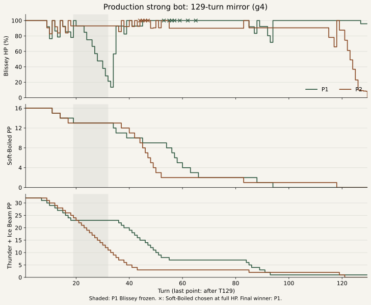

公開版の「強」＝81,000回探索を使用。耐久構築の対戦を終局まで記録し、同じ局面から代替戦略を比較しました。
高HPでの回復を攻撃へ置き換える単純な戦略は、この16組では明確な優位を確認できませんでした。 PP管理と長い交代反復が、次に検証すべき強化候補です。
通常の得点率 65.6%、代替戦略 71.9%。得点率差は +6.25ポイント、ペア・ブートストラップ95%区間は -31.25〜+43.75ポイント。
更新: 2026-10-17T11:28:03.918933+00:00。全16組の比較が完了しました。
既存作業をローカルコミット 00b4371 に保全し、clean を確認して開始。2026年10月17日17:02 JSTに取得した公開版のworker・WASM・チーム・相手の事前分布を保存しました。選出は公開版の事前計算表、戦闘中は双方81,000回です。観測には相手の隠れた技や持ち物を渡していません。
公開WASMのSHA-256: 3164238a3912eb7444a9cf24c49281980893e332221cfc8c27accb750bb0c4ab。手元のビルドは異なるため、比較計算にも保存した公開WASMを使用しました。
| ID | 構築 | ターン | 勝者 | HP70%超の即時回復選択 | カウンター選択 |
|---|---|---|---|---|---|
| g0 | sample-11 / sample-06 | 20 | p2 | 0 | 0 |
| g1 | sample-11 / sample-06 | 21 | p2 | 0 | 0 |
| g2 | sample-06 / sample-06 | 38 | p2 | 0 | 0 |
| g3 | sample-06 / sample-06 | 26 | p1 | 0 | 0 |
| g4 | sample-11 / sample-11 | 129 | p1 | 29 | 64 |
| g5 | sample-11 / sample-11 | 20 | p2 | 0 | 1 |
| g6 | sample-17-orig / sample-02 | 37 | p1 | 4 | 0 |
| g7 | sample-17-orig / sample-02 | 33 | p2 | 5 | 0 |
耐久向けの4組を2つのseedで調べる目的抽出です。全対戦環境の勝率・頻度を表す標本ではありません。回復回数は選択時点のHPで数え、凍っている間の回復選択は除外しています。
g4は双方がハピナス・スイクン・バンギラスを選出したミラーです。以下はハピナスの推移を示します。

×は満タンでのタマゴうみ選択（計11回）。実際の処理では9回が不発、2回は先に受けた攻撃の35 HPを回復しました。帯はP1ハピナスの凍結期間です。図は各選択前の状態と最終ターン後の状態を示します。図のPNG
代替の得点が高かった組は5、通常の得点が高かった組は4。不一致組に対する両側の正確な符号検定 p=1.000。95%区間は16組を単位とした20,000回のブートストラップです。探索・対戦seedの変動を調べたもので、別の構築や未知情報全体への区間ではありません。
通常は10勝・1分・5敗、代替は11勝・1分・4敗。得点は勝ち1、引き分け0.5、負け0です。
終了ターンの中央値は通常133、代替130.5。最長はそれぞれ1001、1001ターンでした。代替で長くなった組は6、短くなった組は9です。対戦の長さの変化だけでは戦略の強弱を判定しません。
元の129ターン戦と同じ分岐時点・乱数状態での検証では、代替戦略側は38ターンで敗れました。元の戦略も129ターンで敗れているため、この1例では改善していません。選択によって将来の乱数消費順も変わるので、平均的な優劣は16組の比較で判断します。
10ターン目の増量探索で選ばれたれいとうビームを手がかりに、回復を抑える1種類のルールを固定して試しました。g4の10ターン目から将来の乱数を変え、通常戦略と「相手が凍っていないハピナスで、自分が凍っておらずHP60%超なら、タマゴうみをれいとうビームに置き換える」戦略を比較しました。その他の行動は同じ公開botです。両側とも81,000回探索します。
過去の全観測を復元し、分岐直前のログも取り込んでから将来乱数を変更します。各組で同じ将来乱数seed・探索seedを使いますが、選択が変われば乱数の消費順は変わります。実際に起きた隠れ状態に条件づけた分析であり、未知情報全体での最適性を示すものではありません。
公開エンジンの1000ターン上限に達すると、正式な引き分けになります（内部のturn値は1001）。別途、交代だけを繰り返すエンジン確認で検証しました。この確認は32戦の勝敗集計に含めていません。待ち時間による打ち切りや未完走とは区別しています。
| seed組 | 通常 | 代替 | 終了ターン 通常 / 代替 |
|---|---|---|---|
| 0 | 0 | 1 | 119 / 199 |
| 1 | 1 | 1 | 35 / 31 |
| 2 | 0 | 1 | 145 / 123 |
| 3 | 1 | 0 | 140 / 61 |
| 4 | 0 | 1 | 732 / 151 |
| 5 | 1 | 0 | 172 / 26 |
| 6 | 1 | 0 | 126 / 131 |
| 7 | 1 | 1 | 159 / 69 |
| 8 | 1 | 1 | 96 / 225 |
| 9 | 0 | 1 | 68 / 119 |
| 10 | 1 | 1 | 45 / 23 |
| 11 | 1 | 1 | 31 / 143 |
| 12 | 0.5 | 0.5 | 1001 / 1001 |
| 13 | 1 | 0 | 212 / 130 |
| 14 | 1 | 1 | 32 / 151 |
| 15 | 0 | 1 | 150 / 134 |
経過の例では、seed組0は通常が119ターンで負け、代替が199ターンで勝ちました。一方seed組11は両方勝ちですが、通常31ターンに対して代替は143ターンです。代替側は両例とも29ターン目にれいとうビームのPPが尽き、その後は置換条件を満たせず、満タン回復も再発しました。勝敗の改善と対戦の短縮は別に評価する必要があります。
seed組4では、通常戦略が732ターンで敗れ、代替戦略は151ターンで勝ちました。通常戦略は222～704ターンの483ターン連続で双方が交代し、HP・PPが変わりませんでした。終局後の追加診断では、500ターン目の81,000回の選択を両側で再現し、243,000・729,000回に増やしても双方が交代を選びました。交代反復を減らすことが一般に得点率を上げるかは、別途検証が必要です。
seed組12では、通常戦略が779ターン連続、代替戦略が806ターン連続で双方交代を続け、いずれもその間のHP・PPは変わりませんでした。両方とも1000ターン上限で引き分けです。今回の回復→攻撃ルールでは、この長い交代反復は解消しませんでした。
同じ履歴・探索seedで81,000、243,000、729,000回の入れ子の探索を比較しました。元の8戦から選んだ4局面・両側の8件です。81,000回の結果は元の対戦と全行動の訪問数・評価値まで一致しています。
| 局面 / 側 | 81,000 | 243,000 | 729,000 |
|---|---|---|---|
| g2-d32 / P1 | なみのり | なみのり | なみのり |
| g2-d32 / P2 | れいとうビーム | れいとうビーム | ねむる |
| g4-d12 / P1 | タマゴうみ | タマゴうみ | タマゴうみ |
| g4-d12 / P2 | タマゴうみ | れいとうビーム | れいとうビーム |
| g4-d55 / P1 | タマゴうみ | タマゴうみ | タマゴうみ |
| g4-d55 / P2 | カウンター | カウンター | カウンター |
| g7-d8 / P1 | じこさいせい | じこさいせい | じこさいせい |
| g7-d8 / P2 | おんがえし | おんがえし | おんがえし |
g4-d12は10ターン目、g4-d55は53ターン目です。10ターン目のP2は増量で攻撃へ変わる一方、53ターン目のP1は満タンでの回復を維持しました。今回試した9倍までの増量では、両方は解決しませんでした。選択が変わったこと自体は勝率改善の証明ではありません。
満タンで選んだ回復でも、同じターンに相手の攻撃が先に入れば回復効果があります。g4の45・46ターン目は実際に35 HPずつ回復しました。一方、53ターン目など9回は不発です。選択時HPや1回の不発だけで、同時選択の期待値が悪いとは断定しません。
| 組 / 戦略 | 終了ターン | 同時交代 計 / 最長連続 | わるあがき P1 / P2 |
|---|---|---|---|
| 12 / 通常 | 1001 | 790 / 779 | 0 / 4 |
| 12 / 代替 | 1001 | 815 / 806 | 0 / 0 |
| 4 / 通常 | 732 | 504 / 483 | 15 / 27 |
同時交代は、両側が通常の行動として交代を選んだ局面数です。ひんし後の強制交代は除いています。わるあがきは選択回数であり、実際に技が成功した回数ではありません。
確認できたのは行動上の改善候補と、1種類の介入の条件付き成績です。より良い戦略が存在しないことや、この変更が一般に強いことまでは示していません。
元の8戦は356状態とPRNG、代表局面の63件の探索結果（全行動の訪問数・評価値・選択）を一致確認。代替比較は現在32戦、計5726局面の状態・合法手・終局を再生確認しました。 クラウドで完走した2戦は、別環境でも先頭・中間・末尾の両側、計12選択の一致を確認しました。途中実装の結果は使用せず、修正後の32戦を比較対象に固定しました。32戦すべて終局まで確認済みです。
調査データと再現スクリプトはリポジトリの findings/deployed-endurance-v1、web/tests/endurance-*.mjs、tools/endurance-*.py に保存しています。公開資産のハッシュ、全対戦ログ、反実仮想の条件、監査結果を含みます。製品コードの変更・push・公開デプロイは行っていません。
補助クラウド計算の使用料見積もりは約103円（クレジット適用前の概算で、請求額ではありません）。クラウドのジョブ・VMは削除確認済みです。